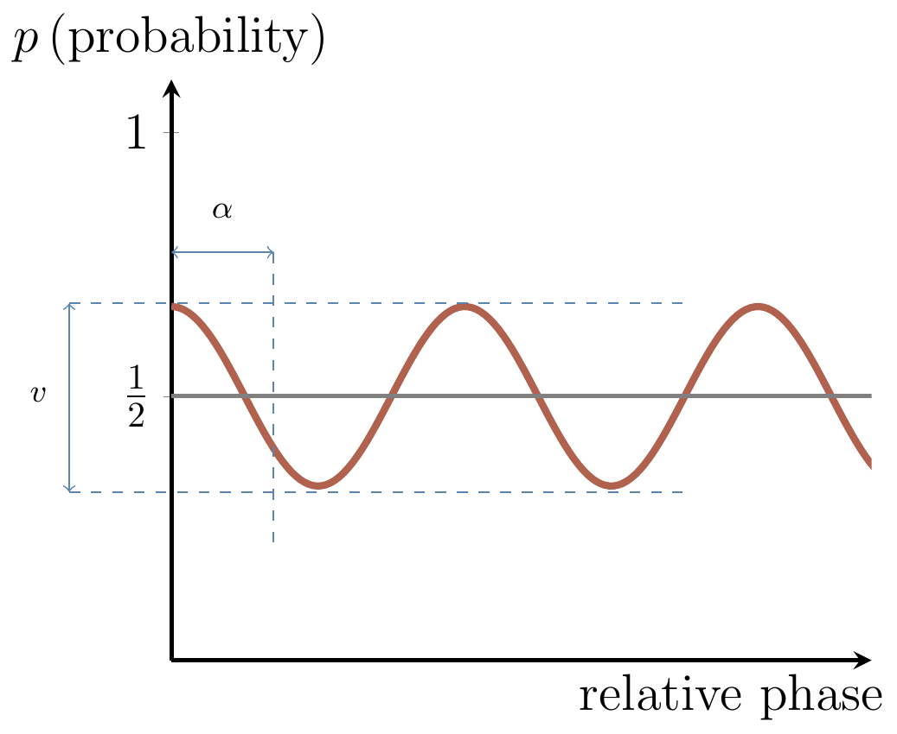

Chapter 8 Decoherence, and elements of quantum error correction
On … !!!TODO!!!
In principle we know how to build a quantum computer: we can start with simple quantum logic gates and try to integrate them together into quantum networks. However, if we keep on putting quantum gates together into networks we will quickly run into some serious practical problems. The more interacting qubits involved, the harder it is to prevent them from getting entangled with the environment. This unwelcome entanglement, also known as decoherence, destroys the interference, and thus the power, of quantum computing.
8.1 Decoherence simplified
Consider the following qubit-environment interaction: \[ \begin{aligned} |0\rangle|e\rangle &\longmapsto |0\rangle|e_{00}\rangle \\|1\rangle|e\rangle &\longmapsto |1\rangle|e_{11}\rangle \end{aligned} \] where \(|e\rangle\), \(|e_{00}\rangle\), and \(|e_{11}\rangle\) are the states of the environment, which not need to be orthogonal.43 The reason we use two indices in \(|e_{00}\rangle\) and \(|e_{11}\rangle\) will become clear in a moment, when we consider more general interaction with the environment. Let \(|\psi\rangle = \alpha|0\rangle + \beta|1\rangle\) be the initial state of the qubit. The environment is essentially trying to measure the qubit and, as the result, the two get entangled: \[ \Big( \alpha|0\rangle + \beta|1\rangle \Big) |e\rangle \longmapsto \alpha |0\rangle|e_{00}\rangle + \beta |1\rangle |e_{11}\rangle. \] This state can also be written as \[ \begin{aligned} \Big( \alpha|0\rangle + \beta|1\rangle \Big) |e\rangle \longmapsto & \Big( \alpha|0\rangle + \beta|1\rangle \Big) \frac{|e_{00}\rangle+|e_{11}\rangle}{2} \\+& \Big( \alpha|0\rangle - \beta|1\rangle \Big) \frac{|e_{00}\rangle-|e_{11}\rangle}{2}. \end{aligned} \] or as \[ |\psi\rangle|e\rangle \longmapsto \operatorname{id}|\psi\rangle|e_1\rangle + Z|\psi\rangle|e_z\rangle, \] where \(|e_1\rangle = \frac12(|e_{00}\rangle + |e_{11}\rangle)\) and \(|e_z\rangle = \frac12(|e_{00}\rangle - |e_{11}\rangle)\). We may interpret this expression by saying that two things can happen to the qubit: nothing \(\operatorname{id}\) (first term), or phase-flip \(Z\) (second term). This, however, should not be taken literally unless the states of the environment, \(|e_1\rangle\) and \(|e_z\rangle\), are orthogonal.44 Why not?
8.2 Decoherence and interference
Suppose the qubit undergoes the usual interference experiment but in between the two Hadamard gates it is affected by decoherence (denoted by \(\times\)).
Figure 8.1: The usual interference experiment, but with decoherence.

Let us step through the circuit in Figure 8.1, keeping track of the state of the environment: \[ \begin{aligned} |0\rangle|e\rangle & \overset{H}{\longmapsto} \Big( |0\rangle + |1\rangle \Big) |e\rangle \\& \overset{\phi}{\longmapsto} \Big( |0\rangle + e^{i\phi}|1\rangle \Big) |e\rangle \\& \overset{\times}{\longmapsto} |0\rangle|e_0\rangle + e^{i\phi}|1\rangle|e_1\rangle \\& \overset{H}{\longmapsto} |0\rangle\Big( |e_{00}\rangle + e^{i\phi}|e_{11}\rangle \Big) + |1\rangle\Big( |e_{00}\rangle - e^{i\phi}|e_{11}\rangle \Big). \end{aligned} \] If we write \(\langle e_0|e_1\rangle = ve^{i\alpha}\), then the final probabilities of \(0\) and \(1\) oscillate with \(\phi\) as \[ \begin{aligned} P_{0}(\phi) &= \frac12\big(1 + v\cos(\phi + \alpha)\big), \\P_{1}(\phi) &= \frac12\big(1 - v\cos(\phi + \alpha)\big). \end{aligned} \]
 Figure 8.2: Visibility suppression.
As we can see in Figure 8.2, the interference pattern is suppressed by a factor \(v\), which we call the visibility. As \(v=|\!\langle e_0|e_1\rangle\!|\) decreases, we lose all the advantages of quantum interference. For example, in Deutsch’s algorithm we obtain the correct answer with probability at most \((1+v)/2\). For \(\langle e_0|e_1\rangle = 0\), the perfect decoherence case, the network outputs \(0\) or \(1\) with equal probabilities, i.e. it is useless as a computing device.
It is clear that we want to avoid decoherence, or at least diminish its impact on our computing device. For this we need quantum error correction: we encode the state of a single (logical) qubit across several (physical) qubits.
8.3 Evolution of density operators under decoherence
In terms of density operators, the qubit alone evolves from the pure state \(|\psi\rangle\langle\psi|\) to a mixed state, which can be obtained by tracing over the environment. We start with the evolution of the state vector \(|\psi\rangle=\alpha|0\rangle+\beta|1\rangle\), which is given by \[ \left( \alpha|0\rangle +\beta |1\rangle\right)|e\rangle \longmapsto \alpha |0\rangle|e_{00}\rangle +\beta |1\rangle |e_{11}\rangle, \] Then we write it as the evolution of the projector \(|\psi\rangle\langle\psi|\), and trace over the environment to obtain \[ \begin{aligned} |\psi\rangle\langle\psi| \longmapsto & |\alpha|^2|0\rangle\langle 0| \langle e_{00}|e_{00}\rangle+ \alpha\beta^\star |0\rangle\!\langle 1|\langle e_{11}|e_{00}\rangle \\+ &\alpha^\star\beta |1\rangle\!\langle 0|\langle e_{00}|e_{11}\rangle + |\beta|^2|1\rangle\langle 1|\langle e_{11}|e_{11}\rangle. \end{aligned} \] Written in the matrix form, this is \[ \begin{bmatrix} |\alpha|^2 & \alpha\beta^\ast \\\alpha^\ast\beta & |\beta|^2 \end{bmatrix} \longmapsto \begin{bmatrix} |\alpha|^2 & \alpha\beta^\ast \langle e_{11}|e_{00}\rangle \\\alpha^\ast\beta \langle e_{00}|e_{11}\rangle & |\beta|^2 \end{bmatrix}. \] The off-diagonal elements, originally called coherences, vanish as \(\langle e_0|e_1\rangle\) approaches zero. This is why this particular interaction is called decoherence.
Notice that \[ |\psi\rangle|e\rangle \longmapsto \operatorname{id}|\psi\rangle|e_1\rangle +Z|\psi\rangle|e_z\rangle, \] implies \[ |\psi\rangle\langle\psi|\longmapsto \operatorname{id}|\psi\rangle\langle\psi| \operatorname{id}\langle e_1|e_1\rangle +Z|\psi\rangle\langle\psi| Z\langle e_z|e_z\rangle, \] only when \(\langle e_1|e_z\rangle=0\) (otherwise you would have additional cross terms \(\operatorname{id}|\psi\rangle\langle\psi| Z\) and \(Z|\psi\rangle\langle\psi| \operatorname{id}\)). In this case we can indeed say that, with probability \(\langle e_1|e_1\rangle\), nothing happens, and, with probability \(\langle e_z|e_z\rangle\), the qubit undergoes the phase-flip \(Z\).
8.4 Quantum errors
The most general qubit-environment interaction \[ \begin{aligned} |0\rangle|e\rangle &\longmapsto |0\rangle|e_{00}\rangle + |1\rangle|e_{01}\rangle, \\|1\rangle|e\rangle &\longmapsto |1\rangle|e_{10}\rangle + |0\rangle|e_{11}\rangle, \end{aligned} \] where the states of the environment are neither normalised nor orthogonal, leads to decoherence \[ \begin{aligned} \Big( \alpha|0\rangle + \beta|1\rangle \Big) |e\rangle \longmapsto & \Big( \alpha|0\rangle + \beta|1\rangle \Big) \frac{|e_{00}\rangle+|e_{11}\rangle}{2} \\+& \Big( \alpha|0\rangle - \beta|1\rangle \Big) \frac{|e_{00}\rangle-|e_{11}\rangle}{2} \\+& \Big( \alpha|1\rangle + \beta|0\rangle \Big) \frac{|e_{01}\rangle+|e_{10}\rangle}{2} \\+& \Big( \alpha|1\rangle - \beta|0\rangle \Big) \frac{|e_{01}\rangle-|e_{10}\rangle}{2}. \end{aligned} \] We can also write this as \[ |\psi\rangle|e\rangle \longmapsto \operatorname{id}|\psi\rangle|e_1\rangle + Z|\psi\rangle |e_z\rangle +X|\psi\rangle |e_x\rangle + Y|\psi\rangle |e_y\rangle. \] The intuition behind this expression is that four things can happen to the qubit:
- nothing (\(\operatorname{id}\)),
- phase-flip (\(Z\)),
- bit-flip (\(X\)), or
- both bit-flip and phase-flip (\(Y\)).
This is certainly the case when the states \(|e_1\rangle, |e_x\rangle, |e_y\rangle\) and \(|e_z\rangle\) are mutually orthogonal, otherwise we cannot perfectly distinguish between the four alternatives.
What is important here is the discretisation of errors, and the fact that we can reduce quantum errors to two types: bit-flip errors \(X\), and phase-flip errors \(Z\).
In general, given \(n\) qubits in state \(|\psi\rangle\) and the environment in state \(|e\rangle\) the joint evolution can be expanded as \[ |\psi\rangle|e\rangle \longmapsto \sum_i E_i|\psi\rangle|e_i\rangle, \] where the \(E_i\) are the \(n\)-fold tensor products of the Pauli operators and the \(|e_i\rangle\) are the corresponding states of the environment, which are not assumed to be normalised or mutually orthogonal. A typical operator \(E_i\) acting on five qubits may look like this, \[ X\otimes Z \otimes \operatorname{id}\otimes \operatorname{id}\otimes Y \equiv XZ\operatorname{id}\operatorname{id}Y. \] We can say that \(E_i\) represents an error consisting of the bit (\(X\)) error on the first qubit, phase (\(Z\)) error on the second qubit and both bit and phase (\(Y\)) error on the fifth qubit. Again, this is not quite accurate if the corresponding states of the environment are not mutually orthogonal, but it gives the right kind of intuition nonetheless. Here the index \(i\) in \(E_i\) ranges from \(1\) to \(4^5=1024\), because there are \(4^5\) different Pauli operators acting on \(5\) qubits.
8.5 Same evolution, different errors
We can always pick up an orthonormal basis \(|u_i\rangle\) in the environment and express the system–environment evolution as \[ \begin{aligned} |\psi\rangle|e\rangle \longmapsto &\sum_{ij} E_i|\psi\rangle|u_j\rangle\langle u_j|e_i\rangle \\&= \sum_{j}\Big( \sum_i \langle u_j|e_i\rangle E_i\Big)|\psi\rangle|u_j\rangle \\&= \sum_j M_j|\psi\rangle|u_j\rangle. \end{aligned} \] The new “error” operators \(M_j\) satisfy \(\sum_j M_j^\dagger M_j =\operatorname{id}\) and, in general, they are not unitary. Now, the evolution of the density operator \(|\psi\rangle\langle\psi|\) can be written as \[ |\psi\rangle\langle\psi|\longmapsto \sum_j M_j|\psi\rangle\langle\psi| M_j^\dagger. \] Which particular errors you choose depends of your choice of the basis in the environment. If, instead of \(|u_j\rangle\), you pick up a different basis, say \(|v_k\rangle\), then \[ \begin{aligned} |\psi\rangle|e\rangle \longmapsto &\sum_j M_j|\psi\rangle|u_j\rangle \\&= \sum_j M_j |\psi\rangle\sum_k|v_k\rangle\langle v_k|u_j\rangle \\&= \sum_k \Big(\sum_j \langle v_k|u_j\rangle M_j \Big)|\psi\rangle|v_k\rangle \\&= \sum_k N_k|\psi\rangle|v_k\rangle, \end{aligned} \] and, consequently, \[ |\psi\rangle\langle\psi|\longmapsto \sum_k N_k|\psi\rangle\langle\psi| N_k^\dagger. \] The new “errors” satisfy \(\sum_k N_k^\dagger N_k = \operatorname{id}\), and the error operators \(N_k\) and \(M_j\) are related by the unitary matrix \(U_{kj}=\langle v_k|u_j\rangle\).
8.6 Some errors can be corrected on some states
Alice prepares a quantum object in some state \(|\psi\rangle\) and sends it to Bob. The object is intercepted by a malicious Eve who changes its state by applying one of the prescribed unitary operations \(U_1,\ldots, U_n\), with probabilities \(p_1,\ldots, p_n\), respectively. Alice and Bob know the set of possible unitaries (errors), and the associated probabilities, but they do not know which particular unitary operation was chosen by Eve. Can Bob reconstruct the state \(|\psi\rangle\)? The answer is affirmative, at least for some states \(|\psi\rangle\).
Let \(\mathcal{H}\) be the Hilbert space pertaining to the object, and let \(\mathcal{C}\) be a subspace of \(\mathcal{H}\). Suppose \(|\psi\rangle\in\mathcal{C}\), and that, for each vector in \(\mathcal{C}\), we have \[ \langle\psi|U^\dagger_i U_j|\psi\rangle = \delta_{ij} \] Any error \(U_k\) transforms the subspace \(\mathcal{C}\) into the subspace \(\mathcal{C}_k\), which is orthogonal to \(\mathcal{C}\) and also to any other subspace \(\mathcal{C}_j\) for \(j\neq k\). All Bob has to do is - perform a measurement, defined by projectors on the subspaces \(\mathcal{C}_j\) for \(j=1,\ldots n\), - identify \(k\), and - apply \(U_k^\dagger\).
As an example, consider an object composed of three qubits and the subspace \(\mathcal{C}\) spanned by the two basis vectors \(|000\rangle\) and \(|111\rangle\). Suppose Eve applies one of the following four unitary operations: \(U_0=\operatorname{id}\otimes\operatorname{id}\otimes \operatorname{id}\), \(U_1 =X\otimes\operatorname{id}\otimes \operatorname{id}\), \(U_2 =\operatorname{id}\otimes X\otimes \operatorname{id}\), and \(U_3=\operatorname{id}\otimes\operatorname{id}\otimes X\). That is, the identity, or bit-flip on the first, second, or third qubit. Each operation is chosen randomly with the same probability of \(1/4\). It is easy to see that the four operations generate four subspaces: \[ \begin{aligned} \mathcal{C} = \Big\langle|000\rangle,|111\rangle\Big\rangle &\qquad \mathcal{C}_1 = \Big\langle|100\rangle,|011\rangle\Big\rangle \\\mathcal{C}_2 = \Big\langle|010\rangle,|101\rangle\Big\rangle& \qquad \mathcal{C}_3 = \Big\langle|001\rangle,|110\rangle\Big\rangle. \end{aligned} \] The eight dimensional Hilbert space of the three qubits is then decomposed into the sum of orthogonal subspaces \[ \mathcal{C} \oplus \mathcal{C}_1 \oplus\mathcal{C}_2 \oplus \mathcal{C}_3 \] So suppose Alice prepares \(|\psi\rangle=\alpha|000\rangle+\beta|111\rangle\) and Eve applies the bit-flip to the third qubit. This generates the state \(\operatorname{id}\otimes\operatorname{id}\otimes X|\psi\rangle=\alpha|001\rangle+\beta|110\rangle\in \mathcal{C}_3\). The projective measurement on these subspaces tells Bob that the new state is in the subspace \(\mathcal{C}_3\), and hence the original state can be recovered by the operation \(\operatorname{id}\otimes\operatorname{id}\otimes X\).
8.7 Repetition codes
In order to give a sense of how quantum error correction actually works, let us begin with a classical example of a repetition code. Suppose a transmission channel flips each bit in transit with probability \(p\). If this error rate is considered too high then it can be decreased by encoding each bit into, say, three bits: \[ \begin{aligned} 0 &\mapsto 000 \\1 &\mapsto 111. \end{aligned} \] That is, each time we want to send logical \(0\), we send three physical bits, all in state \(0\); each time we want to send logical \(1\), we send three physical bits, all in state \(1\). The receiver decodes the bit value by a “majority vote” of the three bits. If only one error occurs, then this error correction procedure is foolproof. In general, the net probability of error is just the likelihood that two or three errors occur, which is \(3p^2(1-p) + p^3 < p\). Thus the three bit code improves the reliability of the information transfer. The quantum case, however, is more complicated, because we have both bit-flip and phase-flip errors.
8.8 Quantum error correction
In order to protect a qubit against bit-flips (incoherent \(X\) rotations), we rely on the same repetition code, but both encoding and error correction is now done by quantum operations. We take a qubit in some unknown pure state \(\alpha|0\rangle + \beta|1\rangle\), introduce two auxiliary qubits, and encode it into three qubits as

Suppose that at most one qubit is then flipped (say, the second one). The encoded state then becomes \(\alpha|010\rangle + \beta|101\rangle\). Decoding requires some care: if we measure the three qubits directly it would destroy the superposition of states that we are working so hard to protect. Instead we introduce another two additional qubits, both in state \(|0\rangle\), and apply the following network:

We measure the two auxiliary qubits, also known as ancilla bits, and the result of the measurement, known as the error syndrome, tells us how to reset the three qubits of the code. The theory behind this network runs as follows.
If qubits one and two (counting from the top) are the same, then the first ancilla is in the \(|0\rangle\) state. Similarly, if qubits two and three are the same, then the second ancilla is in the \(|0\rangle\) state. However, if they are different, then the corresponding ancilla is in the \(|1\rangle\) state. Hence, the four possible error syndromes — \(|00\rangle\), \(|01\rangle\), \(|10\rangle\), and \(|11\rangle\) — each indicate a different possibility: no errors, an error in the third, first, or second qubits (respectively). In our example, we would measure \(|11\rangle\), revealing that both qubits 1 and 2, and qubits 2 and 3, are different. Thus it is qubit 2 that has an error. Knowing the error, we can go back and fix it, simply by applying \(X\) to qubit 2. The net result is the state \(\alpha|000\rangle + \beta|111\rangle\), which is then turned into \((\alpha|0\rangle + \beta|1\rangle)|0\rangle|0\rangle\) by running the mirror image of the encoding network.
8.9 Turning bit-flips into phase-flips
The three-qubit code that we have just demonstrated is sufficient to protect a qubit against single bit-flips, but not phase-flips. But this is good enough. Recall that \(HZH=X\), and so it is enough to sandwich the decoherence area in between the Hadamard gates: they will turn phase flips into bit flips, and we already know hot to protect our qubits against \(Z\)-errors. The encoded state \(\alpha|0\rangle + \beta|1\rangle\) now reads \(\alpha|+++\rangle+\beta|---\rangle\), where \(|\pm\rangle=|0\rangle\pm|1\rangle\).
8.10 Dealing with bit-flip and phase-flip errors
We can now put the bit-flip and phase-flip codes together: first we encode the qubit using the phase-flip code, and then we encode each of the three qubits of the code using the bit-flip code. This gives an error correction scheme that allows us to protect against both types of error, thus yielding a code that encodes a single logical qubit across nine physical qubits, protecting against a single quantum error on any of the nine qubits.
If we want to preserve a quantum state for a long time without doing any computations, or if we want to send it through a noisy communications channel, we can just encode the state using a quantum code and decode it when we are done. Computation on encoded states using noisy gates requires few more tricks (to be completed).
Click here to view this entire chapter on one page.
Click here to view this chapter in the book.